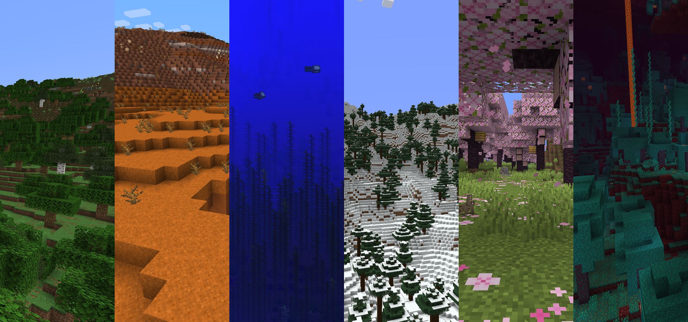
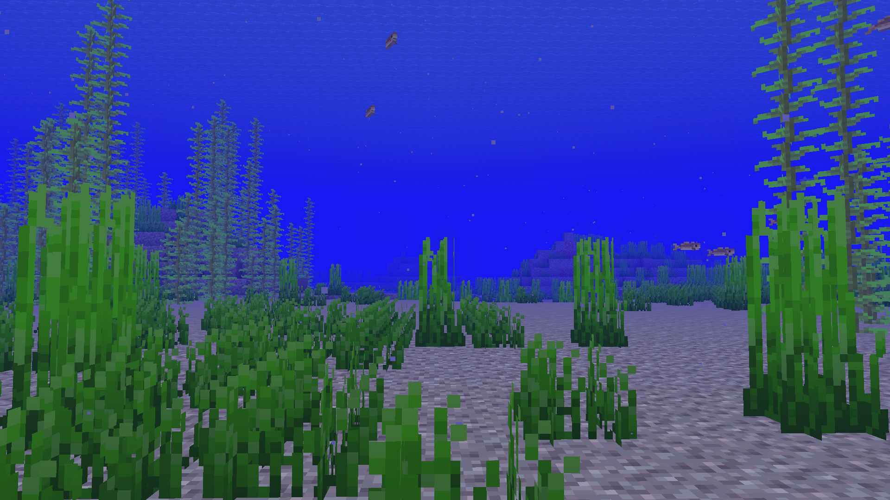
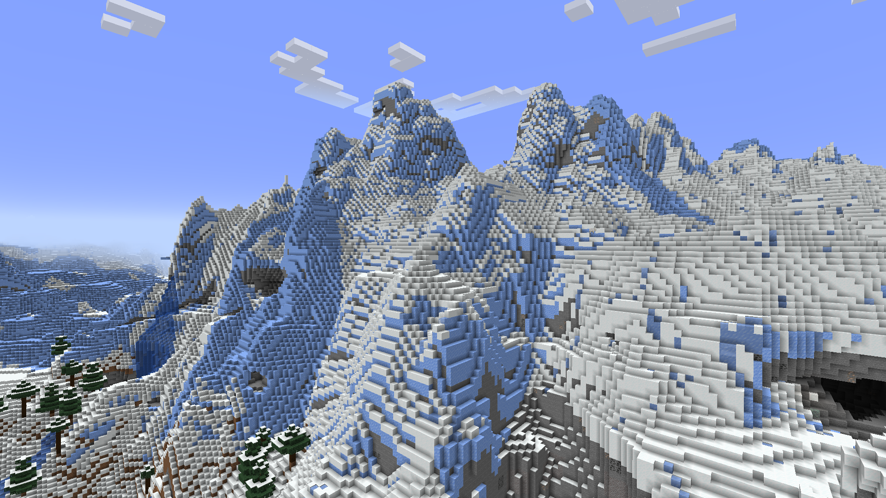
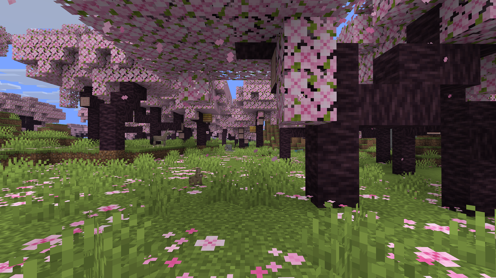
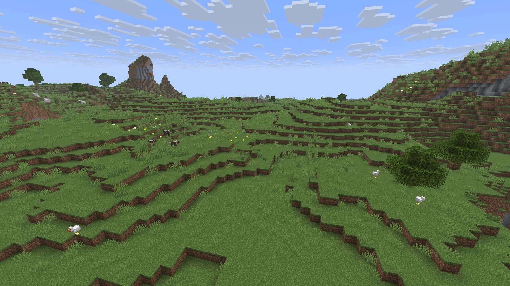

Um bioma é uma região de um mundo com características geográficas distintas, plantas, multidões, temperaturas, níveis de umidade, cores e muito mais. Os biomas separam cada mundo gerado em diferentes ambientes, como florestas, desertos e oceanos.
O bioma de um local é determinado durante geração mundial e não pelo ambiente atual, mesmo que todos os blocos de uma grande área sejam alterados para imitar o terreno de outros biomas.
Os biomas existentes podem ser localizados com o comando. Em Edição Java, o O comando pode ser usado para alterar o bioma em uma área selecionada. /locate biome/fillbiome

Minecraft contém muitos biomas diferentes para os quais é possível viajar. Alguns exemplos, da esquerda para a direita, são floresta, terras áridas, oceano profundo, arvoredo, bosque de cerejeiras, e floresta deformada.
| Nome do bioma | Descrição | Captura de tela |
|---|---|---|
|
Oceano |
O bioma oceânico básico. Assim como suas variantes mais frias, seu piso é composto em grande parte de cascalho, coberto com algas e ervas marinhas. No entanto, também podem aparecer pequenas manchas de sujeira, areia e argila. Bacalhau e salmão pode aparecer aqui ao lado golfinhos, lula e nautilus. Afogado e raramente nautilus zumbis também pode desovar aqui à noite e durante tempestades. |
 |
|
Picos congelados |
Os picos congelados são cobertos por blocos de neve e gelo compactado com pequenas bolhas ocasionais de gelo. Cabras pode surgir neste bioma. Ursos polares e coelhos também pode aparecer aqui e vira-latas aparecem à noite ou durante tempestades. Este bioma geralmente é gerado em montanhas mais lisas e menos irregulares em comparação ao bioma de picos irregulares. Postos avançados de saqueadores pode gerar aqui. |
 |
|
Bosque de cerejeiras |
Os bosques de cerejeiras são pastagens com muitas grama curta, grama alta e, em vez do tradicional dente de leão e papoula flores, o chão está coberto de pétalas rosa. As principais características ambientais do cerejeiro são cereja árvores identificadas pela sua impressionante cor rosa. As cerejeiras podem gerar densamente o suficiente para criar uma cobertura de folhas. Ovelha, porcos e coelhos são os únicos mobs passivos que surgem neste bioma. |
 |
|
Planícies |
Um bioma plano e gramado com colinas onduladas e poucas carvalho árvores. Aldeias são comuns. Aberturas de cavernas, lagos de lava e cachoeiras são facilmente identificáveis devido ao terreno plano e desobstruído. Mobs passivos são facilmente encontrados em biomas de planícies; este bioma também é um dos poucos biomas onde cavalos e burros desovam naturalmente, enquanto hostis cavalos zumbis aparecerá durante o noite. Postos avançados de saqueadores pode gerar aqui. |
 |